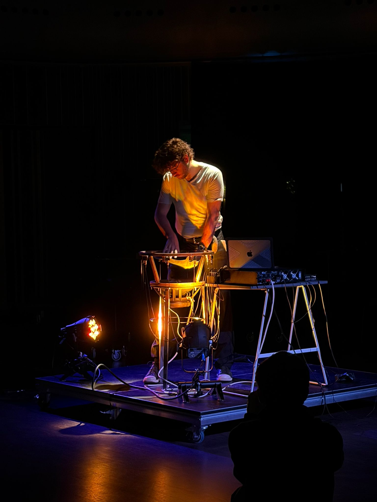

Live
Digital Resonance
A latex membrane stretches over an exposed 15-inch speaker mounted on a steel frame. Hands press into the latex skin while the sound from the speaker sets it vibrating. The hands become sensors that not only shape the digitally generated sound in space, but simultaneously perceive, analyse, and respond to it.
The single speaker radiates sound directed by the hands, the material, and the player-driven algorithms. Depending on the point of pressure, the membrane filters and refracts this radiation differently, according to the material and position of the hand. From this emerges a spatiality anchored in body position rather than a fixed placement in space.


Bouncing Bodies
Under the alias Störtebecker, David uses extended sequencing techniques in his self-programmed environment to move frequencies through space in new forms. Inspired by downtempo, minimal, and classic dubstep, he created instruments that interact with each other like entities in an environment, which he can control on micro and macro levels. Through an improvisational approach he adapts to specific atmospheres and spaces, exploring new ideas, rhythms, and sounds every time he puts his hands on the controllers.

Our Earthly Delights
"Our Earthly Delights" is David's sound research into the ambiguous border of environments and entities. Entities and environments continually shape each other in both dynamic and collective ways. An entity group can be viewed as an environment, while numerous environments are entities interacting. By exploring the blurry line between defining and separating entities and environments, a more profound and intuitive comprehension can be achieved through deep listening.

Ghosts We Forgot To Call (Back)
In this performance David explores the capacities of the human voice in the context of throat singing — from very fragile, noisy, and silent to rich and deep sounds. It creates a space that reminds of old and maybe long-forgotten rituals, communicating not only with the long dead but also with electronics, expanding the capabilities and zooming into the rich and diverse sound of the human voice.